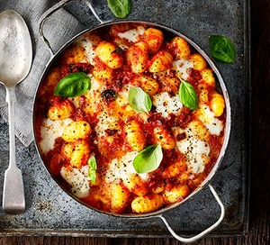

Prep time: 10min
Difficulty: easy
Servings: 6 servings
Cook time: 25min
| Ingredients |
|---|
|
1 tbsp olive oil
1 onion, finely chopped 2 garlic cloves, crushed 120g chorizo, diced 2 x 400g cans chopped tomatoes 1 tsp caster sugar 600g fresh gnocchi 125g mozzarella ball, cut into chunks small bunch of basil, torn green salad, to serve |